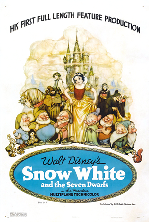

ფიფქია და შვიდი ჯუჯა (ინგლ. Snow White and the Seven Dwarfs) — Walt Disney Productions-ის 1937 წლის სრულმეტრაჟიანი ანიმაციური ფილმი, რომლის დისტრიბუტორი იყო RKO Radio Pictures. იგი არის პირველი ცნობილი სრულმეტრაჟიანი ანიმაციური ფილმი. ფილმი ეფუძნება ძმები გრიმების ზღაპარს „ფიფქია“. იგი ადაპტირებულია დოროთი ენ ბლენკის, რიჩარდ კრიდონის, მერილ დე მარისის, ოტო ინგლენდერის, ერლ ჰერდის, დიკ რიკარდის, ტედ სირსის და უებ სმითის მიერ. ფილმის მეთვალყურე რეჟისორია დევიდ ჰენდი, ხოლო უილიამ კოტრელი, უილფრედ ჯექსონი, ლარი მოური, პირს პირსი და ბენ შარპსტინი ცალკე სცენებზე მუშაობდნენ.
ფილმის პრემიერა გაიმართა ჰოლივუდში, 1937 წლის 21 დეკემბერს, რასაც მოჰყვა კინოგაქირავებაში 1938 წლის 4 თებერვალს გაშვება. მას დიდი წარმატება ხვდა წილად როგორც კრიტიკოსებს, ასევე რიგით მაყურებლებს შორის. ფილმის მსოფლიო შემოსავალმა შეადგინა 8 მილიონი აშშ დოლარი, რითაც იგი იმ დროისთვის ყველაზე შემოსავლიან ხმოვან ნამუშევრად ითვლებოდა. წარმატების გამო იგი კინოთეატრებში მრავალჯერ გაიმეორეს, ხოლო 1990-იანებში პირველად გამოუშვეს ვიდეოზე. ინფლაციის გათვალისწინებით, იგი ჩრდილოეთ ამერიკის კინოგაქირავებაში ყველაზე წარმატებული ფილმების ათეულში შედის.

ოსკარის მე-11 დაჯილდოებაზე დისნეის გადაეცა სპეციალური ჯილდო, ხოლო ფილმი წინა წელს ნომინირებული იყო საუკეთესო მუსიკის კატეგორიაში. 1989 წელს ფილმების ეროვნულმა რეესტრმა „ფიფქია“ აირჩია კონგრესის ბიბლიოთეკაში შესატანად, როგორც „კულტურულად, ისტორიულად ან ესთეტიკურად მნიშვნელოვანი ნამუშევარი“. იგი შეტანილია ამერიკის კინოინსტიტუტის ყველა დროის 100 უდიდესი ამერიკული ფილმის სიაშიც. დისნეის მიერ ზღაპრის ადაპტირების მცდელობამ მნიშვნელოვანი კულტურული გავლენა იქონია, რასაც მოჰყვა თემატური გასართობი პარკების, ვიდეო თამაშის და ბროდვეიზე მიუზიკლის შექმნა.